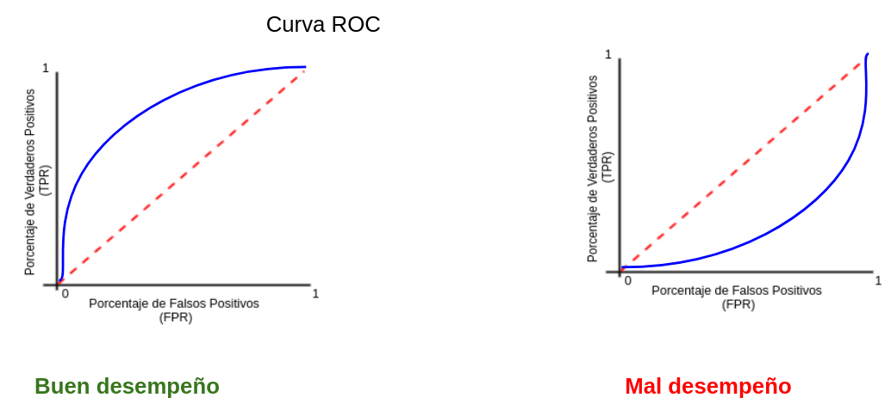
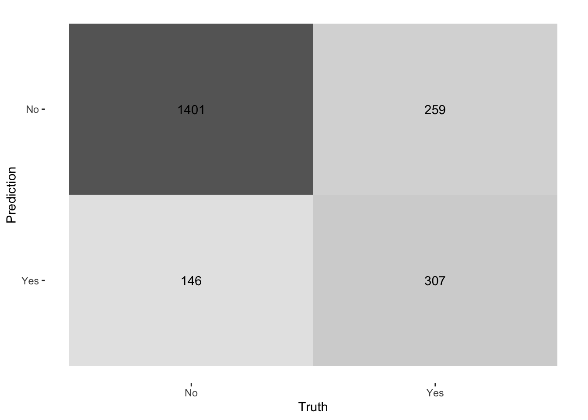

Capítulo 6 Regresión Logística
El nombre de este modelo es: Regresión Bernoulli con liga logit, pero todo mundo la conoce solo por regresión logística. Es importante saber que la liga puede ser elegida dentro de un conjunto de ligas comunes, por lo que puede dejar de ser logit y seguir siendo regresión Bernoulli, pero ya no podría ser llamada “logística”.
Al igual que en regresión lineal, existe la regresión simple y regresión múltiple. La regresión logística simple se utiliza una variable independiente, mientras que cuando se utiliza más de una variable independiente, el proceso se denomina regresión logística múltiple.
Objetivo: Estimar la probabilidad de pertenecer a la categoría positiva de una variable de respuesta categórica. Posteriormente, se determina el umbral de probabilidad a partir del cual se clasifica a una observación como positiva o negativa.
6.1 Función sigmoide
Si una variable cualitativa con dos categorías se codifica como 1 y 0, matemáticamente es posible ajustar un modelo de regresión lineal por mínimos cuadrados. El problema de esta aproximación es que, al tratarse de una recta, para valores extremos del predictor, se obtienen valores de \(Y\) menores que 0 o mayores que 1, lo que entra en contradicción con el hecho de que las probabilidades siempre están dentro del rango [0,1].
Para evitar estos problemas, la regresión logística transforma el valor devuelto por la regresión lineal empleando una función cuyo resultado está siempre comprendido entre 0 y 1. Existen varias funciones que cumplen esta descripción, una de las más utilizadas es la función logística (también conocida como función sigmoide):
\[\sigma(Z)=\frac{e^{Z}}{1+e^{Z}}\] Función sigmoide:
Para valores de \(Z\) muy grandes, el valor de \(e^{Z}\) tiende a infinito por lo que el valor de la función sigmoide es 1. Para valores de \(Z\) muy negativos, el valor \(e^{Z}\) tiende a cero, por lo que el valor de la función sigmoide es 0.
Sustituyendo la \(Z\) de la función sigmoide por la función lineal \(\beta_0+\beta_1X\) se obtiene que:
\[\pi=P(Y=k|X=x)=\frac{e^{\beta_0+\beta_1X}}{1+e^{\beta_0+\beta_1X}}\]
donde \(P(Y=k|X=x)\) puede interpretarse como: la probabilidad de que la variable cualitativa \(Y\) adquiera el valor \(k\), dado que el predictor \(X\) tiene el valor \(x\).
6.2 Ajuste del modelo
Esta función, puede ajustarse de forma sencilla con métodos de regresión lineal si se emplea su versión logarítmica:
\[logit(\pi)= ln(\frac{\pi}{1-\pi}) = ln(\frac{p(Y=k|X=x)}{1−p(Y=k|X=x)})=\beta_0+\beta_1X\]
\[P(Y=k|X=x)=\frac{e^{\beta_0+\beta_1x_1+\beta_2x_2+...+\beta_ix_i}}{1+e^{\beta_0+\beta_1x_1+\beta_2x_2+...+\beta_ix_i}}\]
La combinación óptima de coeficientes \(\beta_0\) y \(\beta_1\) será aquella que tenga la máxima verosimilitud (maximum likelihood), es decir el valor de los parámetros \(\beta_0\) y \(\beta_1\) con los que se maximiza la probabilidad de obtener los datos observados.
El método de maximum likelihood está ampliamente extendido en la estadística aunque su implementación no siempre es trivial.
Otra forma para ajustar un modelo de regresión logística es empleando descenso de gradiente. Si bien este no es el método de optimización más adecuado para resolver la regresión logística, está muy extendido en el ámbito de machine learning para ajustar otros modelos.
6.3 Clasificación
Una de las principales aplicaciones de un modelo de regresión logística es clasificar la variable cualitativa en función de valor que tome el predictor. Para conseguir esta clasificación, es necesario establecer un threshold de probabilidad a partir de la cual se considera que la variable pertenece a uno de los niveles. Por ejemplo, se puede asignar una observación al grupo 1 si \(p̂ (Y=1|X)>0.3\) y al grupo 0 si ocurre lo contrario.
Es importante mencionar que el punto de corte no necesariamente tiene que ser 0.5, este puede ser seleccionado a conveniencia de la métrica a optimizar.
6.4 Métricas de desempeño
Existen distintas métricas de desempeño para problemas de clasificación, debido a que contamos con la respuesta correcta podemos contar cuántos aciertos tuvimos y cuántos fallos tuvimos.
Primero, por simplicidad ocuparemos un ejemplo de clasificación binaria, Cancelación (1) o No Cancelación (0).
En este tipo de algoritmos definimos cuál de las categorías será nuestra etiqueta positiva y cuál será la negativa. La positiva será la categoría que queremos predecir -en nuestro ejemplo, Cancelación- y la negativa lo opuesto -en el caso binario- en nuestro ejemplo, no cancelación.
Dadas estas definiciones tenemos 4 posibilidades:
True positives: Nuestra predicción dijo que la transacción es fraude y la etiqueta real dice que es fraude.
False positives: Nuestra predicción dijo que la transacción es fraude y la etiqueta real dice que no es fraude.
True negatives: Nuestra predicción dijo que la transacción es no fraude y la etiqueta real dice que no es fraude.
False negatives: Nuestra predicción dijo que la transacción es no fraude y la etiqueta real dice que es fraude.
Matriz de confusión

Esta métrica corresponde a una matriz en donde se plasma el conteo de los aciertos y los errores que haya hecho el modelo, esto es: los verdaderos positivos (TP), los verdaderos negativos (TN), los falsos positivos (FP) y los falsos negativos (FN).
Normalmente los renglones representan las etiquetas predichas, ya sean positivas o negativas, y las columnas a las etiquetas reales, aunque esto puede cambiar en cualquier software.
- Accuracy
Número de aciertos totales entre todas las predicciones.
\[accuracy = \frac{TP + TN}{ TP+FP+TN+FN}\]
La métrica más utilizada, en conjuntos de datos no balanceados esta métrica no nos sirve, al contrario, nos engaña. Adicionalmente, cuando la identificación de una categoría es más importante que otra es mejor recurrir a otras métricas.
- Precision: Eficiencia
De los que identificamos como clase positiva, cuántos identificamos correctamente. ¿Qué tan eficientes somos en la predicción?
\[precision = \frac{TP}{TP + FP}\]
¿Cuándo utilizar precisión?
Esta es la métrica que ocuparás más, pues en un contexto de negocio, donde los recursos son finitos y tiene un costo asociado, ya sea monetario o de tiempo o de recursos, necesitarás que las predicciones de tu etiqueta positiva sean muy eficientes.
Al utilizar esta métrica estaremos optimizando el modelo para minimizar el número de falsos positivos.
- Recall o Sensibilidad: Cobertura
Del universo posible de nuestra clase positiva, cuántos identificamos correctamente.
\[recall = \frac{TP}{TP + FN }\]
Esta métrica la ocuparás cuando en el contexto de negocio de tu problema sea más conveniente aumentar la cantidad de positivos o disminuir los falsos negativos. Esto se realiza debido al impacto que estos pueden tener en las personas en quienes se implementará la predicción.
- Especificidad
Es el número de observaciones correctamente identificados como negativos fuera del total de negativos.
\[Specificity = \frac{TN}{TN+FP}\]
- F1-score
Combina precision y recall para optimizar ambos.
\[F = 2 *\frac{precision * recall}{precision + recall} \]
Se recomienda utilizar esta métrica de desempeño cuando quieres balancear tanto los falsos positivos como los falsos negativos. Aunque es una buena solución para tomar en cuenta ambos errores, pocas veces hay problemas reales que permiten ocuparla, esto es porque en más del 90% de los casos tenemos una restricción en recursos.
Ahora con esto en mente podemos definir las siguientes métricas:
- AUC y ROC: Area Under the Curve y Receiver operator characteristic

Una curva ROC es un gráfico que muestra el desempeño de un modelo de clasificación en todos los puntos de corte.
AUC significa “Área bajo la curva ROC”. Es decir, AUC mide el área debajo de la curva ROC.
6.5 Implementación en R
Ajustaremos un modelo de regresión logística usando la receta antes vista.
Lectura de datos
library(tidymodels)
library(readr)
telco <- read_csv("data/Churn.csv")Segmentación de datos
set.seed(1234)
telco_split <- initial_split(telco, prop = .7)
telco_train <- training(telco_split)
telco_test <- testing(telco_split)Pre-procesamiento de datos
telco_rec <- recipe(Churn ~ ., data = telco_train) %>%
update_role(customerID, new_role = "id variable") %>%
step_normalize(all_numeric_predictors()) %>%
step_dummy(all_nominal_predictors()) %>%
step_impute_median(all_numeric_predictors()) %>%
step_rm(customerID, skip=T) %>%
prep()
telco_juiced <- juice(telco_rec)
glimpse(telco_juiced)## Rows: 4,930
## Columns: 31
## $ SeniorCitizen <dbl> -0.4417148, -0.4417148, -0.44171…
## $ tenure <dbl> 0.1915835, 0.3140505, -0.4207516…
## $ MonthlyCharges <dbl> -1.50429475, 0.66367718, -0.5084…
## $ TotalCharges <dbl> -0.66321610, 0.47214217, -0.5462…
## $ Churn <fct> No, No, No, Yes, Yes, No, No, No…
## $ gender_Male <dbl> 0, 1, 0, 0, 0, 1, 1, 1, 1, 0, 0,…
## $ Partner_Yes <dbl> 0, 1, 0, 0, 0, 1, 0, 1, 1, 0, 1,…
## $ Dependents_Yes <dbl> 0, 1, 0, 0, 0, 1, 0, 0, 0, 0, 1,…
## $ PhoneService_Yes <dbl> 1, 1, 1, 1, 1, 1, 1, 0, 0, 1, 1,…
## $ MultipleLines_No.phone.service <dbl> 0, 0, 0, 0, 0, 0, 0, 1, 1, 0, 0,…
## $ MultipleLines_Yes <dbl> 0, 0, 0, 1, 0, 0, 0, 0, 0, 0, 0,…
## $ InternetService_Fiber.optic <dbl> 0, 1, 0, 1, 1, 1, 1, 0, 0, 0, 0,…
## $ InternetService_No <dbl> 1, 0, 0, 0, 0, 0, 0, 0, 0, 0, 0,…
## $ OnlineSecurity_No.internet.service <dbl> 1, 0, 0, 0, 0, 0, 0, 0, 0, 0, 0,…
## $ OnlineSecurity_Yes <dbl> 0, 0, 1, 0, 0, 0, 0, 0, 0, 1, 0,…
## $ OnlineBackup_No.internet.service <dbl> 1, 0, 0, 0, 0, 0, 0, 0, 0, 0, 0,…
## $ OnlineBackup_Yes <dbl> 0, 0, 0, 0, 0, 1, 0, 0, 0, 1, 0,…
## $ DeviceProtection_No.internet.service <dbl> 1, 0, 0, 0, 0, 0, 0, 0, 0, 0, 0,…
## $ DeviceProtection_Yes <dbl> 0, 1, 0, 0, 0, 1, 1, 0, 1, 0, 0,…
## $ TechSupport_No.internet.service <dbl> 1, 0, 0, 0, 0, 0, 0, 0, 0, 0, 0,…
## $ TechSupport_Yes <dbl> 0, 0, 0, 0, 0, 0, 0, 0, 0, 0, 1,…
## $ StreamingTV_No.internet.service <dbl> 1, 0, 0, 0, 0, 0, 0, 0, 0, 0, 0,…
## $ StreamingTV_Yes <dbl> 0, 1, 0, 0, 0, 1, 0, 1, 0, 0, 0,…
## $ StreamingMovies_No.internet.service <dbl> 1, 0, 0, 0, 0, 0, 0, 0, 0, 0, 0,…
## $ StreamingMovies_Yes <dbl> 0, 0, 0, 1, 0, 0, 0, 1, 0, 0, 0,…
## $ Contract_One.year <dbl> 0, 1, 0, 0, 0, 0, 0, 1, 0, 0, 1,…
## $ Contract_Two.year <dbl> 1, 0, 0, 0, 0, 0, 0, 0, 0, 1, 0,…
## $ PaperlessBilling_Yes <dbl> 0, 1, 1, 1, 1, 1, 0, 1, 0, 0, 1,…
## $ PaymentMethod_Credit.card..automatic. <dbl> 0, 0, 0, 0, 0, 1, 0, 1, 0, 0, 1,…
## $ PaymentMethod_Electronic.check <dbl> 0, 1, 1, 1, 1, 0, 1, 0, 1, 0, 0,…
## $ PaymentMethod_Mailed.check <dbl> 1, 0, 0, 0, 0, 0, 0, 0, 0, 0, 0,…telco_test_bake <- bake(telco_rec, new_data = telco_test)
glimpse(telco_test_bake)## Rows: 2,113
## Columns: 32
## $ customerID <chr> "5575-GNVDE", "9305-CDSKC", "671…
## $ SeniorCitizen <dbl> -0.4417148, -0.4417148, -0.44171…
## $ tenure <dbl> 0.06911644, -0.99226439, -0.9106…
## $ MonthlyCharges <dbl> -0.27067882, 1.14914329, -1.1751…
## $ TotalCharges <dbl> -0.1752116, -0.6472105, -0.87618…
## $ Churn <fct> No, Yes, No, No, No, No, No, No,…
## $ gender_Male <dbl> 1, 0, 0, 1, 1, 0, 1, 1, 1, 1, 0,…
## $ Partner_Yes <dbl> 0, 0, 0, 0, 0, 0, 1, 1, 1, 1, 1,…
## $ Dependents_Yes <dbl> 0, 0, 0, 0, 1, 0, 0, 1, 1, 0, 0,…
## $ PhoneService_Yes <dbl> 1, 1, 0, 1, 1, 1, 1, 1, 0, 1, 1,…
## $ MultipleLines_No.phone.service <dbl> 0, 0, 1, 0, 0, 0, 0, 0, 1, 0, 0,…
## $ MultipleLines_Yes <dbl> 0, 1, 0, 0, 1, 0, 0, 0, 0, 1, 1,…
## $ InternetService_Fiber.optic <dbl> 0, 1, 0, 0, 1, 1, 0, 0, 0, 0, 1,…
## $ InternetService_No <dbl> 0, 0, 0, 1, 0, 0, 1, 0, 0, 0, 0,…
## $ OnlineSecurity_No.internet.service <dbl> 0, 0, 0, 1, 0, 0, 1, 0, 0, 0, 0,…
## $ OnlineSecurity_Yes <dbl> 1, 0, 1, 0, 1, 0, 0, 1, 0, 1, 1,…
## $ OnlineBackup_No.internet.service <dbl> 0, 0, 0, 1, 0, 0, 1, 0, 0, 0, 0,…
## $ OnlineBackup_Yes <dbl> 0, 0, 0, 0, 0, 1, 0, 1, 1, 1, 1,…
## $ DeviceProtection_No.internet.service <dbl> 0, 0, 0, 1, 0, 0, 1, 0, 0, 0, 0,…
## $ DeviceProtection_Yes <dbl> 1, 1, 0, 0, 1, 1, 0, 0, 0, 1, 1,…
## $ TechSupport_No.internet.service <dbl> 0, 0, 0, 1, 0, 0, 1, 0, 0, 0, 0,…
## $ TechSupport_Yes <dbl> 0, 0, 0, 0, 0, 0, 0, 1, 0, 1, 1,…
## $ StreamingTV_No.internet.service <dbl> 0, 0, 0, 1, 0, 0, 1, 0, 0, 0, 0,…
## $ StreamingTV_Yes <dbl> 0, 1, 0, 0, 1, 0, 0, 0, 0, 1, 0,…
## $ StreamingMovies_No.internet.service <dbl> 0, 0, 0, 1, 0, 0, 1, 0, 0, 0, 0,…
## $ StreamingMovies_Yes <dbl> 0, 1, 0, 0, 1, 1, 0, 0, 0, 1, 0,…
## $ Contract_One.year <dbl> 1, 0, 0, 0, 0, 0, 1, 0, 0, 0, 0,…
## $ Contract_Two.year <dbl> 0, 0, 0, 1, 1, 0, 0, 0, 0, 1, 1,…
## $ PaperlessBilling_Yes <dbl> 0, 1, 0, 0, 0, 1, 0, 0, 0, 1, 1,…
## $ PaymentMethod_Credit.card..automatic. <dbl> 0, 0, 0, 1, 0, 0, 0, 1, 0, 1, 1,…
## $ PaymentMethod_Electronic.check <dbl> 0, 1, 0, 0, 0, 1, 0, 0, 1, 0, 0,…
## $ PaymentMethod_Mailed.check <dbl> 1, 0, 1, 0, 0, 0, 0, 0, 0, 0, 0,…Creación y ajuste de modelo
logistic_model <- logistic_reg() %>%
set_engine("glm")
logistic_fit1 <- parsnip::fit(logistic_model, Churn ~ ., telco_juiced)Predicción de respuesta con nuevos datos
logistic_p_test <- predict(logistic_fit1, telco_test_bake) %>%
bind_cols(telco_test_bake) %>%
select(.pred_class, Churn)
logistic_p_test## # A tibble: 2,113 × 2
## .pred_class Churn
## <fct> <fct>
## 1 No No
## 2 Yes Yes
## 3 No No
## 4 No No
## 5 No No
## 6 Yes No
## 7 No No
## 8 No No
## 9 Yes Yes
## 10 No No
## # ℹ 2,103 more rows6.6 Matriz de Confusión
logistic_p_test %>%
yardstick::conf_mat(truth = Churn, estimate = .pred_class) %>%
autoplot(type = "heatmap")
bind_rows(
yardstick::accuracy(logistic_p_test, Churn, .pred_class, event_level = "second"),
yardstick::precision(logistic_p_test, Churn, .pred_class, event_level = "second"),
yardstick::recall(logistic_p_test, Churn, .pred_class, event_level = "second"),
yardstick::specificity(logistic_p_test, Churn, .pred_class, event_level = "second"),
yardstick::f_meas(logistic_p_test, Churn, .pred_class, event_level = "second")
)## # A tibble: 5 × 3
## .metric .estimator .estimate
## <chr> <chr> <dbl>
## 1 accuracy binary 0.808
## 2 precision binary 0.678
## 3 recall binary 0.542
## 4 specificity binary 0.906
## 5 f_meas binary 0.603¿Y si se quiere un corte diferente? ¿el negocio qué necesita?
logistic_p_test_prob <- predict(logistic_fit1, telco_test_bake, type = "prob") %>%
bind_cols(telco_test_bake) %>%
select(.pred_Yes, .pred_No, Churn)
logistic_p_test_prob## # A tibble: 2,113 × 3
## .pred_Yes .pred_No Churn
## <dbl> <dbl> <fct>
## 1 0.0382 0.962 No
## 2 0.769 0.231 Yes
## 3 0.309 0.691 No
## 4 0.0227 0.977 No
## 5 0.0372 0.963 No
## 6 0.551 0.449 No
## 7 0.0635 0.937 No
## 8 0.0270 0.973 No
## 9 0.520 0.480 Yes
## 10 0.0136 0.986 No
## # ℹ 2,103 more rowslogistic_p_test_prob <- logistic_p_test_prob %>%
mutate(.pred_class = as.factor(if_else ( .pred_Yes >= 0.30, 'Yes', 'No'))) %>%
relocate(.pred_class , .after = .pred_No)
logistic_p_test_prob## # A tibble: 2,113 × 4
## .pred_Yes .pred_No .pred_class Churn
## <dbl> <dbl> <fct> <fct>
## 1 0.0382 0.962 No No
## 2 0.769 0.231 Yes Yes
## 3 0.309 0.691 Yes No
## 4 0.0227 0.977 No No
## 5 0.0372 0.963 No No
## 6 0.551 0.449 Yes No
## 7 0.0635 0.937 No No
## 8 0.0270 0.973 No No
## 9 0.520 0.480 Yes Yes
## 10 0.0136 0.986 No No
## # ℹ 2,103 more rowsbind_rows(
yardstick::accuracy(logistic_p_test_prob, Churn, .pred_class, event_level = "second"),
yardstick::precision(logistic_p_test_prob, Churn, .pred_class, event_level = "second"),
yardstick::recall(logistic_p_test_prob, Churn, .pred_class, event_level = "second"),
yardstick::specificity(logistic_p_test_prob, Churn, .pred_class, event_level = "second"),
yardstick::f_meas(logistic_p_test_prob, Churn, .pred_class, event_level = "second")
)## # A tibble: 5 × 3
## .metric .estimator .estimate
## <chr> <chr> <dbl>
## 1 accuracy binary 0.769
## 2 precision binary 0.548
## 3 recall binary 0.777
## 4 specificity binary 0.765
## 5 f_meas binary 0.643Para poder determinar cual es el mejor punto de corte, es indispensable conocer el comportamiento y efecto de los diferentes puntos de corte.
Veamos un ejemplo visual en nuestra aplicación de Shiny: ConfusionMatrixShiny